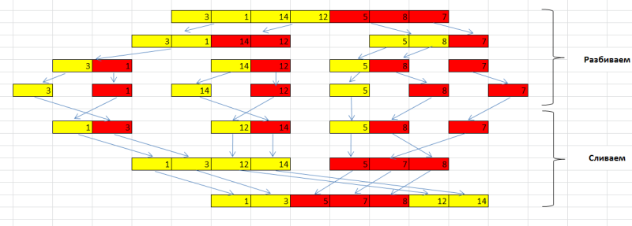
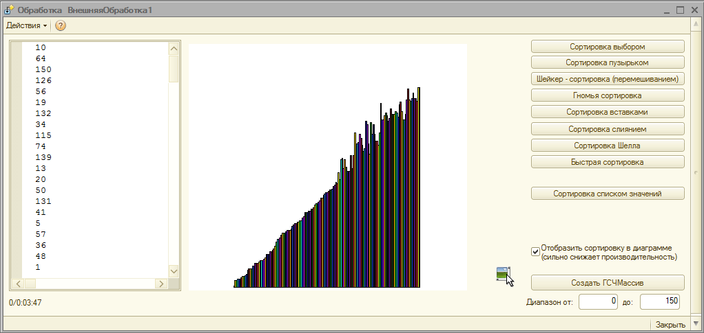

Популярные алгоритмы сортировки массивов
В статье рассмотрены одни из самых популярных алгоритмов сортировки для массивов, применяемых как практически, так и в учебных целях. Сразу хочу оговориться, что все рассмотренные алгоритмы медленнее, чем метод классической сортировки массива через список значений, но тем не менее, заслуживают внимания. Текста получается много, поэтому по каждому алгоритму описываю самое основное.
1.Алгоритм "Сортировка выбором".
Является одним из самых простых алгоритмов сортировки массива. Смысл в том, чтобы идти по массиву и каждый раз искать минимальный элемент массива, обменивая его с начальным элементом неотсортированной части массива. На небольших массивах может оказаться даже эффективнее, чем более сложные алгоритмы сортировки, но в любом случае проигрывает на больших массивах. Число обменов элементов по сравнению с "пузырьковым" алгоритмом N/2, где N - число элементов массива.
Алгоритм:
1. Находим минимальный элемент в массиве.
2. Меняем местами минимальный и первый элемент местами.
3. Опять ищем минимальный элемент в неотсортированной части массива
4. Меняем местами уже второй элемент массива и минимальный найденный, потому как первый элемент массива является отсортированной частью.
5. Ищем минимальные значения и меняем местами элементы,пока массив не будет отсортирован до конца.
//Сортировка выбором {---
Функция СортировкаВыбором(Знач Массив)
Мин = 0;
Для i = 0 По Массив.ВГраница() Цикл
Мин = i;
Для j = i + 1 ПО Массив.ВГраница() Цикл //Ищем минимальный элемент в массиве
Если Массив[j] < Массив[Мин] Тогда
Мин = j;
КонецЕсли;
КонецЦикла;
Если Массив [Мин] = Массив [i] Тогда //Если мин. элемент массива = первому элементу неотс. части массива, то пропускаем.
Продолжить;
КонецЕсли;
Смена = Массив[i]; //Производим замену элементов массива.
Массив[i] = Массив[Мин];
Массив[Мин] = Смена;
КонецЦикла;
Возврат Массив;
КонецФункции
2.Алгоритм "Сортировка пузырьком".
Пожалуй самый известный алгоритм, применяемый в учебных целях, для практического же применения является слишком медленным. Алгоритм лежит в основе более сложных алгоритмов: "Шейкерная сортировка", "Пирамидальная сортировка", "Быстрая сортировка". Примечательно то, что один из самых быстрых алгоритмов "Быстрый алгоритм" был разработан путем модернизации одного из самых худших алгоритмов "Сортировки пузырьком"."Быстрая" и "Шейкерная" сортировки будут рассмотрены далее. Смысл алгоритма заключается в том, что самые "легкие" элементы массива как бы "всплывают" , а самые "тяжелые" "тонут". Отсюда и название "Сортировка пузырьком"
Алгоритм:
1. Каждый элемент массива сравнивается с последующим и если элемент[i] > элемент[i+1] происходит замена. Таким образом самые "легкие" элементы "всплывают" - перемещаются к началу списка,а самые тяжелые "тонут" - перемещаются к концу.
2. Повторяем Шаг 1 n-1 раз, где n - Массив.Количество ().
//Сортировка пузырьком {---
Функция СортировкаПузырьком(Знач Массив)
Для i = 0 По Массив.ВГраница() Цикл
Для j = 0 ПО Массив.Вграница() - i - 1 Цикл
Если Массив[j] > Массив[j + 1] Тогда
Замена = Массив[j];
Массив[j] = Массив[j + 1];
Массив[j + 1] = Замена;
КонецЕсли;
КонецЦикла;
КонецЦикла;
Возврат Массив;
КонецФункции
//---}
3.Алгоритм "Шейкерная сортировка"(Сортировка перемешиванием,Двунаправленная пузырьковая сортировка).
Алгоритм представляет собой одну из версий предыдущей сортировки - "сортировки пузырьком". Главное отличие в том, что в классической сортировке пузырьком происходит однонаправленное движение элементов снизу - вверх, то в шейкерной сортировке сначало происходит движение снизу-вверху, а затем сверху-вниз.
Алгоритм такой же, что и у пузырьковой сортировки + добавляется цикл пробега сверху-вниз.
В приведенном ниже примере, есть усовершенствование в шейкерной сортировке. В отличие от классической, используется в 2 раза меньше итераций.
//Сортировка перемешивание (Шейкер-Сортировка) {---
Функция СортировкаПеремешиванием(Знач Массив)
Для i = 0 ПО Массив.ВГраница()/2 Цикл
нИтер = 0;
конИтер = Массив.ВГраница();
Пока нИтер Массив[нИтер+1] Тогда
Замена = Массив[нИтер];
Массив[нИтер] = Массив[нИтер + 1];
Массив[нИтер + 1] = Замена;
КонецЕсли;
нИтер = нИтер + 1;//Двигаем позицию на шаг вперед
//Проходим с конца
Если Массив[конИтер - 1] > Массив[конИтер] Тогда
Замена = Массив[конИтер - 1];
Массив[конИтер-1] = Массив[конИтер];
Массив[конИтер] = Замена;
КонецЕсли;
конИтер = конИтер - 1;//Двигаем позицию на шаг назад
КонецЦикла;
КонецЦикла;
Возврат Массив;
КонецФункции
//---}
4. Алгоритм "Гномья сортировка".
Алгоритм так странно назван благодаря голландскому ученому Дику Груну.
Гномья сортировка основана на технике, используемой обычным голландским садовым гномом (нидерл. tuinkabouter). Это метод, которым садовый гном сортирует линию цветочных горшков. По существу он смотрит на следующий и предыдущий садовые горшки: если они в правильном порядке, он шагает на один горшок вперёд, иначе он меняет их местами и шагает на один горшок назад. Граничные условия: если нет предыдущего горшка, он шагает вперёд; если нет следующего горшка, он закончил.
Дик Грун
Вот собственно и все описание алгоритма "Гномья сортировка". Что интересно, алгоритм не содержит вложенных циклов, а сортирует весь массив за один проход.
//Гномья сортировка {---
Функция ГномьяСортировка(Знач Массив)
i = 1;
j = 2;
Пока i < Массив.Количество() Цикл // Сравнение < - Сортировка по возрастанию, > - по убыванию
Если Массив[i-1]
i = j;
j = j + 1;
Иначе
Замена = Массив[i];
Массив[i] = Массив[i - 1];
Массив[i - 1] = Замена;
i = i - 1;
Если i = 0 Тогда
i = j;
j = j + 1;
КонецЕсли;
КонецЕсли;
КонецЦикла;
Возврат Массив;
КонецФункции
//---}
5. Алгоритм "Сортировка вставками".
Представляет собой простой алгоритм сортировки. Смысл заключается в том, что на каждом шаге мы берем элемент, ищем для него позицию и вставляем в нужное место.
Элементарный пример: При игре в дурака, вы тянете из колоды карту и вставляете ее в соответствующее место по возрастанию в имеющихся у вас картах. Или
в магазине вам дали сдачу 550 рублей- одна купюра 500, другая 50. Заглядываете в кошелек, а там купюры достоинством 10,100,1000. Вы вставляете купюру
достоинсвом 50р. между купюрами достоинством 10р и 100р, а купюру в 500 рублей между купюрами 100р и 1000р. Получается 10,50,100,500,1000 - Вот вам
и алгоритм "Сортировка вставками".
Таким образом с каждым шагом алгоритма, вам необходимо отсортировать подмассив данных и вставить значение в нужное место.
//Сортировка вставками {---
Функция СортировкаВставками(Знач Массив)
Для i = 0 По Массив.ВГраница()-1 Цикл
Ключ = i + 1;
Замена = Массив[Ключ];
j = i + 1;
Пока j > 0 И Замена < Массив[j - 1] Цикл
Массив[j] = Массив[j - 1];
Замена = j - 1;
Ключ = j - 1;
j = j - 1;
КонецЦикла;
Массив[Ключ] = Замена;
КонецЦикла;
Возврат Массив;
КонецФункции
//---}
6. Алгортим "Сортировка слиянием".
Интересный в плане реализации и идеи алгоритм. Смысл его в том, чтобы разбивать массив на подмассивы, пока длина каждого подмассива не будет равна 1. Тогда мы утверждаем, что такой подмассив отсортирован. Затем сливаем получившиеся подмассивы воедино, одновременно сравнивая и сортируя поэлементно значения подмассивов.
p/s не смог вставить сюда рисунок с более наглядной схемой, постоянно размазывается. Зато хорошо видна в блоке скриншотов внизу. Можно посмотреть как работает алгоритм.
//Сортировка слиянием {---
Функция СортировкаСлиянием(Знач Массив)
Если Массив.Количество() = 1 Тогда
Возврат Массив;
КонецЕсли;
ТочкаРазрыв = Массив.Количество() / 2;
лМассив = Новый Массив;
прМассив = Новый Массив;
Для Сч = 0 ПО Массив.ВГраница() Цикл
Если Сч < ТочкаРазрыв Тогда
лМассив.Добавить(Массив[Сч]);
Иначе
прМассив.Добавить(Массив[Сч]);
КонецЕсли;
КонецЦикла;
Возврат Слияние(СортировкаСлиянием(лМассив),СортировкаСлиянием(прМассив));
КонецФункции
Функция Слияние(массив1,массив2)
a = 0;
b = 0;
слМассив = Новый Массив;
Для Сч = 0 ПО (Массив1.Количество() + Массив2.Количество())-1 Цикл
слМассив.Добавить();
КонецЦикла;
Для i = 0 ПО (массив1.Количество() + массив2.Количество())-1 Цикл
Если b < массив2.Количество() И a < массив1.Количество() Тогда
Если (массив1[a] > массив2[b]) И (b < массив2.Количество()) Тогда
слМассив[i] = массив2[b];
b = b + 1;
Иначе
слМассив[i] = массив1[a];
a = a + 1;
КонецЕсли;
Иначе
Если b < массив2.количество() Тогда
слМассив[i] = массив2[b];
b = b + 1;
Иначе
слМассив[i] = массив1[a];
a = a + 1;
КонецЕсли;
КонецЕсли;
КонецЦикла;
Возврат слМассив;
КонецФункции
//---}
7. Алгортим "Сортировка Шелла".
Алгоритм назван так в честь американского ученого Дональда Шелла. По своей сути этот алгоритм является усовершенствованным алгоритмом "Сортировка вставками". Смысл алгоритма заключается в том, чтобы сравнивать не только элементы, стоящие рядом друг с другом, но и на некотором удалении. Сначало выбирается Шаг - некий промежуток, через который будут сравниваться элементы массива на каждой итерации. Обычно его определяют так:
Для первой итерации Шаг = Цел(Массив.Количество()/2), для последующих Шаг = Цел(Шаг/2). Т.е. постепенно шаг сокращается и когда Шаг будет равен 1 произойдет последние сравнение и массив будет отсортирован.
Пример:
Дан массив (10,5,3,1,14,2,7,12).
1. Шаг = 4.
Сортируем простыми вставками каждые 4 группы по 2 элемента (10,14)(5,2)(3,7)(1,12)
10,2,3,1,14,5,7,12
2. Шаг = 2
Сортируем простыми вставками каждые 2 группы по 4 элемента (10,3,14,7)(2,1,5,12)
3,1,7,2,10,5,14,12
3. Шаг = 1
Сортируем простыми вставками каждую 1 группу по 8 элементов.
1,2,3,5,7,10,12,14
//Сортировка Шелла {---
Функция СортировкаШелла(Знач Массив)
Шаг = Цел(Массив.Количество()/2);
Пока Шаг > 0 Цикл
i = 0;
Пока i < (Массив.Количество() - Шаг) Цикл
j = i;
Пока j >= 0 И Массив[j] > Массив[j + Шаг] Цикл
Замена = Массив[j];
Массив[j] = Массив[j + Шаг];
Массив[j + Шаг] = Замена;
j = j - 1;
Если ПрименитьОтображениеСортировки Тогда
ОтобразитьДиаграммуСортировки(Массив);
КонецЕсли;
КонецЦикла;
i = i + 1;
КонецЦикла;
Шаг = Цел(Шаг/2);
ОбработкаПрерыванияПользователя();
КонецЦикла;
Возврат Массив;
КонецФункции
//---}
8. Алгортим "Быстрая сортировка".
Наиболее популярный и применяемый алгоритм на практике. Является одним из самых эффективных алгоритмов сортировки данных.
Вся суть алгоритма сводится к тому, чтобы разбить сложную задачу на маленькие и решить их по отдельности. Выбирается некая опорная точка и все значения которые меньше перебрасываются влево, все остальные вправо. Далее для каждой полученной части выполняетя тоже самое, до тех пор пока дробить части уже нельзя. В конце мы получаем множество отсортированных частей, которые необходимо просто склеить в 1 целое.
//Алгоритм "Быстрая сортировка" {
Процедура б_Сортировка(Массив,НижнийПредел,ВерхнийПредел)
i = НижнийПредел;
j = ВерхнийПредел;
m = Массив[Цел((i+j)/2)];
Пока Истина Цикл
Пока Массив[i] < m Цикл
i = i + 1;
КонецЦикла;
Пока Массив[j] > m Цикл
j = j - 1;
КонецЦикла;
Если i > j Тогда
Прервать;
КонецЕсли;
КонецЦикла;
Если НижнийПредел < j Тогда
б_Сортировка(Массив,НижнийПредел,j);
КонецЕсли;
Если i < ВерхнийПредел Тогда
б_Сортировка(Массив,i,ВерхнийПредел);
КонецЕсли;
КонецПроцедуры
Функция БыстраяСортировка(Массив)
НижняяГраница = 0;
ВерхняяГраница = Массив.ВГраница();
б_Сортировка(Массив,НижняяГраница,ВерхняяГраница);
Возврат Массив;
КонецФункции
//---}
9. Классическая сортировка массива в 1с.
Передаем массив в список значений. Сортируем стандартным методом "Сортировать".
//Сортировка списком значений {---
Функция СортировкаСпискомЗначений(Знач Массив)
мСписокЗнч = Новый СписокЗначений;
мСписокЗнч.ЗагрузитьЗначения(Массив);
мСписокЗнч.СортироватьПоЗначению(НаправлениеСортировки.Возр);
Возврат мСписокЗнч.ВыгрузитьЗначения();
КонецФункции
//---}
Все сортировки можно ускорить расположив код в циклах в 1 строку. Но для читабельности, оставил так.
Написал обработку в которой реализованы все вышеперечисленные алгоритмы, также поддерживается динамическая анимация процесса сортировки(Кроме стандартной сортировки 1с).
-При запуске обработки автоматически происходит формирование массива случайных чисел от 0 до 100 размерностью 100 элементов.
-Для создания другого массива необходимо нажать на кнопку "Создание ГСЧ массива ", также можно выбирать необходимый диапазон.
-Для включения динамической анимации необходимо поставить галочку на "Отобразить сортировку в диаграмме". Советую на неэффективных алгоритмах устанавливать галочку при размерности массива до 100 элементов, иначе состаритесь ждать сортировки:)
- Динамическая отрисовка процесса сортировки очень сильно снижает производительность, зато наглядно видно как работает алгоритм.
Скриншоты

Алгоритм "Сортировка слиянием"
